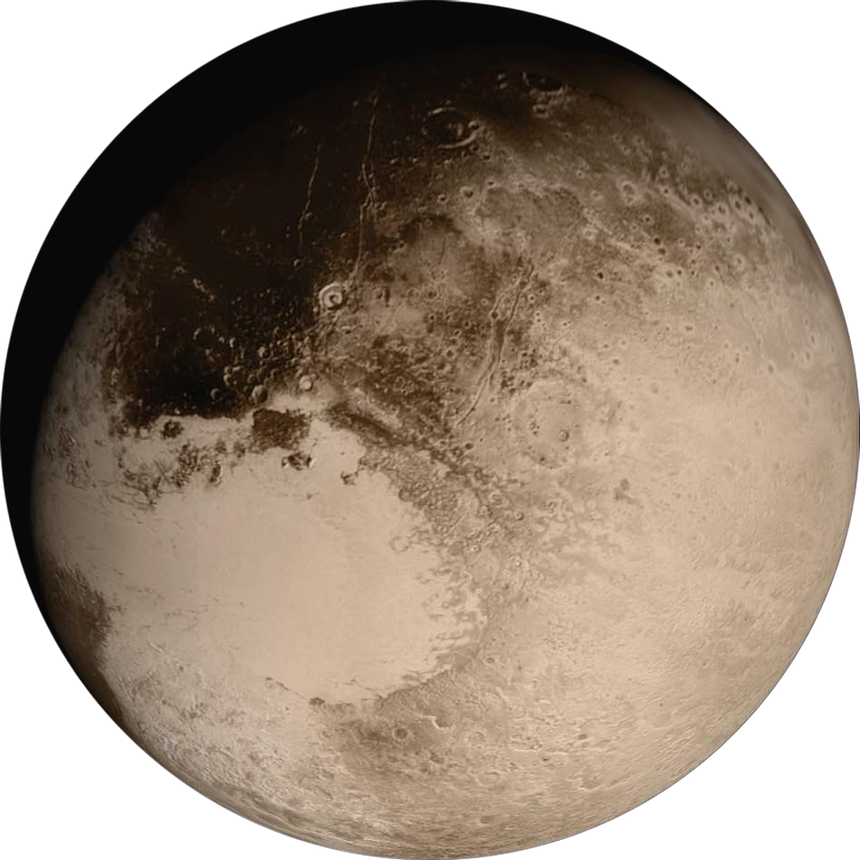

Pluto
X
My beloved

Despite what many "Scientists" might claim, Pluto is in fact a planet. I know this to be true because it is in fact my favorite planet. How, woke liberals, can it be my favorite planet, if it was never a planet to begin with. Checkmate you woke mob
Now, many might claim "oh its too small" yea well guess the fuck what. My titties are tiny as fuck, and we still call them titties now dont we? Wake the fuck up.
Anyway, I truly do love this little guy. Hes such a cutie patootie, and I hope one day he gets the love he really does deserve. This guy is so cool